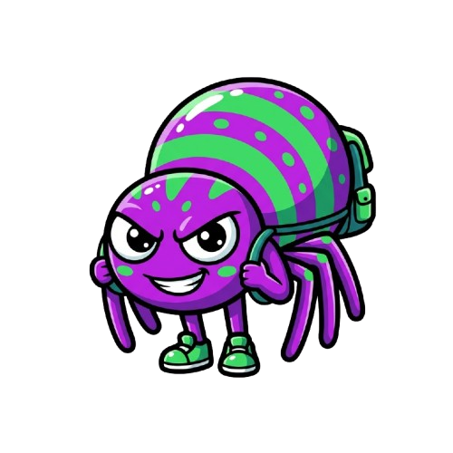

100/100
Nv.1
🕸
0
💰
0
📖
0/14560
🎯
1.0/10
🏆
Lv1 F1
ONDA
1
Próxima em 90s
⚠️
BOSS CHEGANDO EM 10s
?
📖
✨
🛒
☰
🔊
🔨
🏳
MOVER

';initStartScreen();"/>
SPIDER
MERGETYCOON
Assimilação Genética
JOGAR
INSTRUÇÕES
SELECIONE O DNA
5 SLOTS • CADA SLOT É UM JOGO INDEPENDENTE
VOLTAR